01: CARBON INDEX
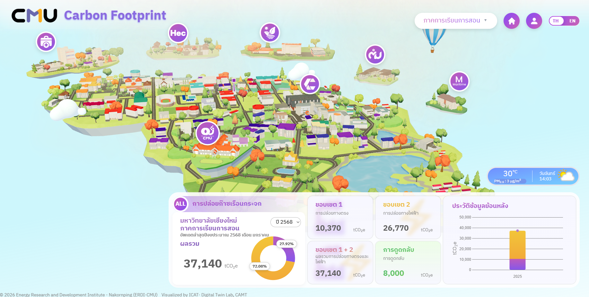
CMU Carbon Footprint
Real-time 3D Carbon Emission Dashboard for CMU.
Digital Twin, Internet of Things (IoT), Data Visualization, Immersive Reality, Game-Based Learning, Research
Received: May 12, 2026
Accepted: June 18, 2026
Published: June 26, 2026
A leading research laboratory dedicated to advancing and applying digital technologies to drive innovation, foster interdisciplinary collaboration, and strengthen the digital ecosystem. The lab aims to enhance the capabilities and competitiveness of the digital industry in Northern Thailand by supporting cutting-edge research, nurturing talent, and promoting partnerships between academia, industry, and the community.
The ICAT Lab showcases high-fidelity interactive digital twin models combining real-time IoT feeds and virtual spaces. Below is a video demonstration displaying our immersive interactive platforms and visualization dashboards.
Our research activities are categorized into three primary interconnected domains. These pillars form a comprehensive loop of sensing (IoT), modeling (Digital Twin), and experiencing (XR/VR).
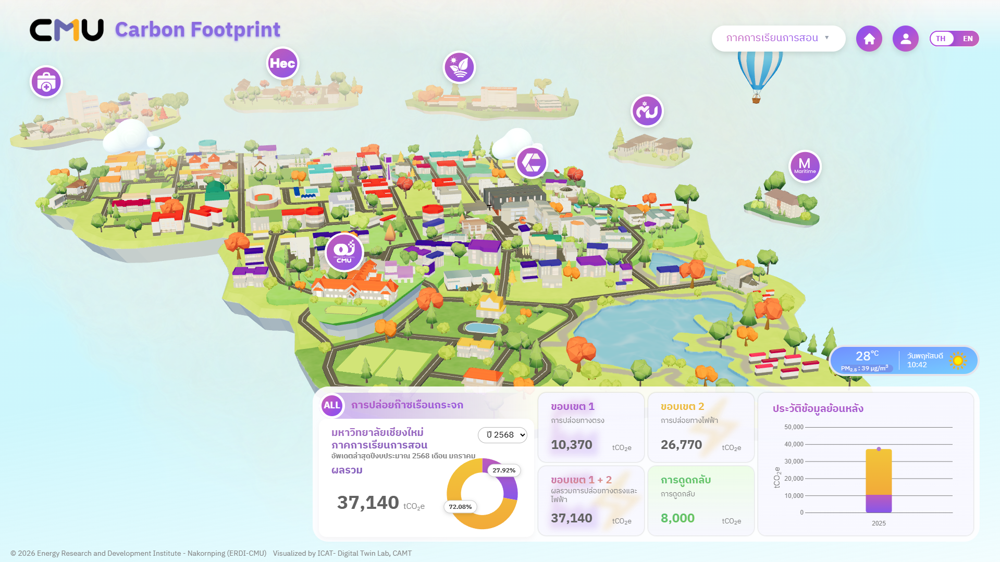
This area focuses on Digital Twin technology for smart environments, covering ESG monitoring, smart campus and smart city development, and real-time data visualization. These systems create virtual representations of real-world environments, enabling learners and researchers to monitor, analyze, and make data-driven decisions.
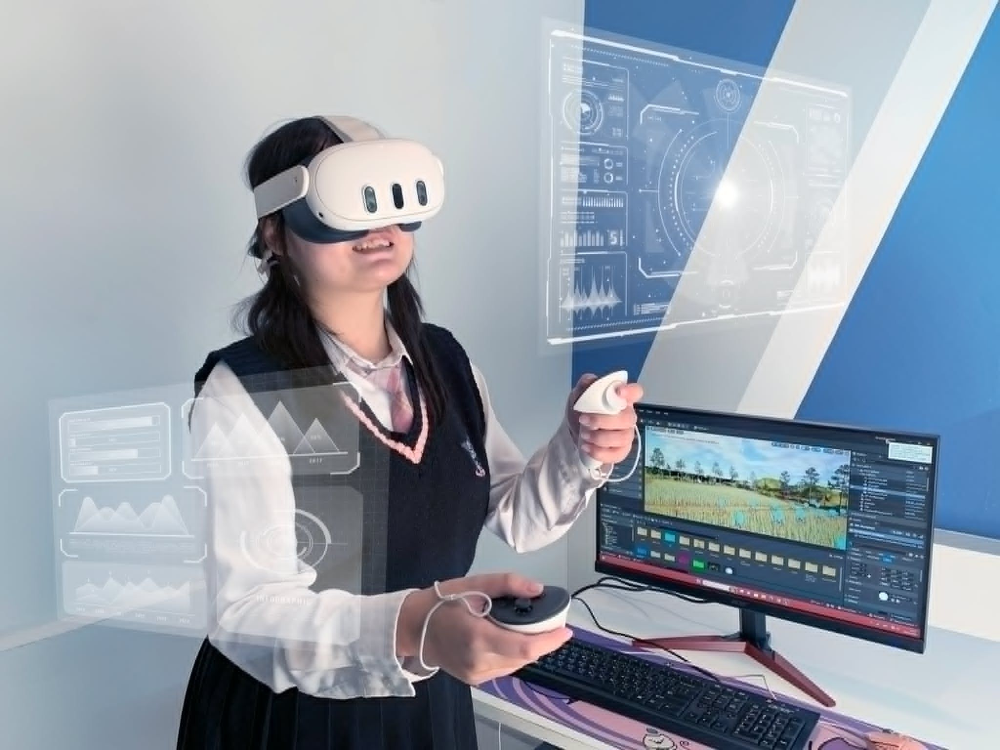
This section highlights immersive technologies such as Virtual Reality (VR) and Extended Reality (XR), spanning VR training and simulation, AI-Generated Content (AIGC), and games. These tools create engaging, interactive experiences that enhance learner participation, improve comprehension, and make complex concepts more accessible.
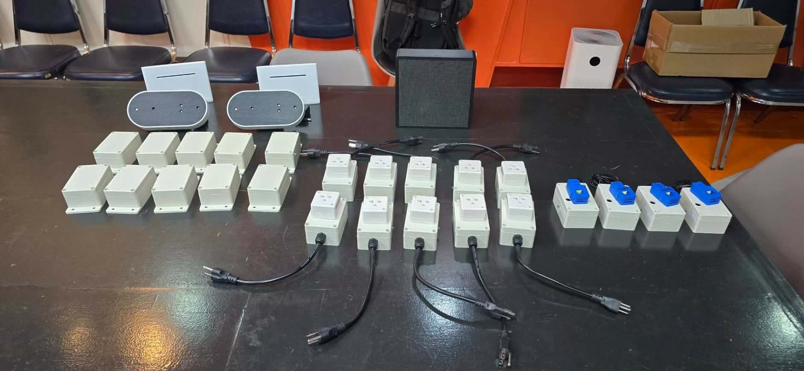
This component applies Artificial Intelligence and IoT to real-world problems, including AI camera detection, smart healthcare, and smart monitoring systems. These solutions combine sensing, data analysis, and automation to support knowledge creation, innovation, and effective decision-making.
Selected research projects from ICAT Lab demonstrating industrial and academic application of Digital Twin technology, IoT integrations, and VR training:

Real-time 3D Carbon Emission Dashboard for CMU.
Coral Reef Education Platform.
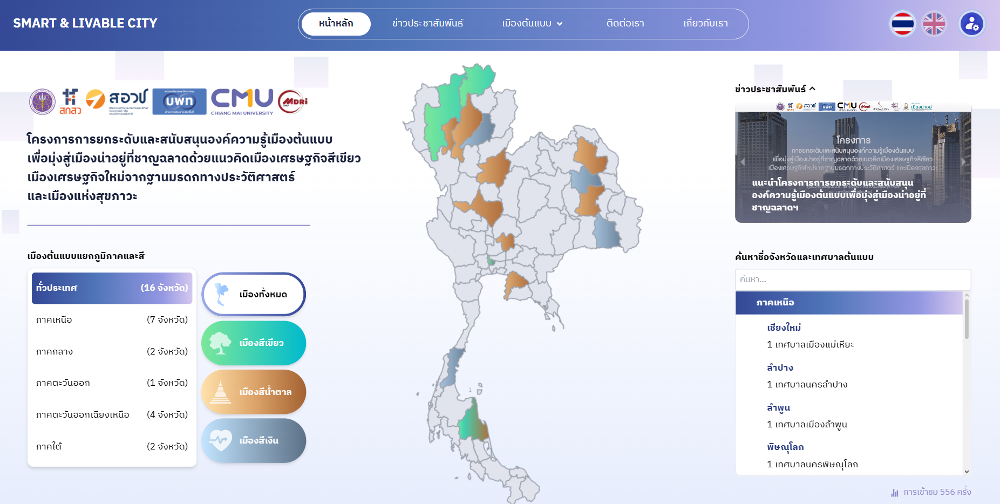
Urban Data Platform for Smart City Planning.
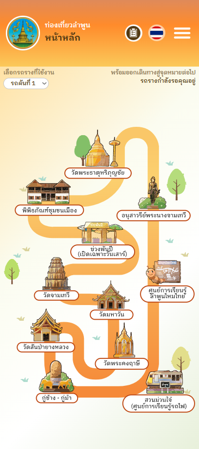
Tourism Promotion App.
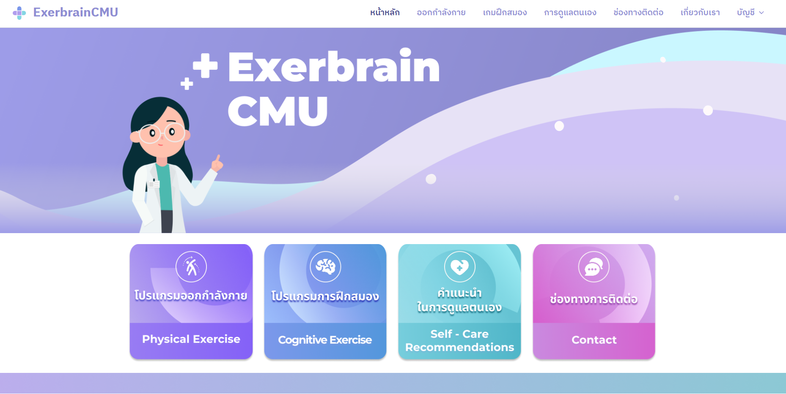
Support Platform for Continuous Rehabilitation in Chronic Stroke Patients.
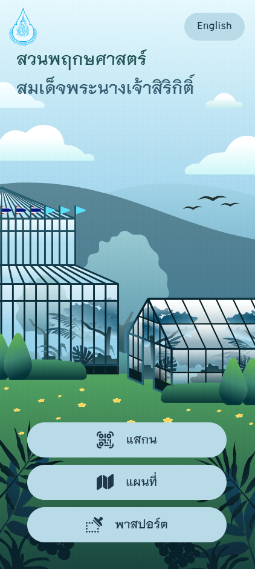
AR Platform for Queen Sirikit Botanic Garden.
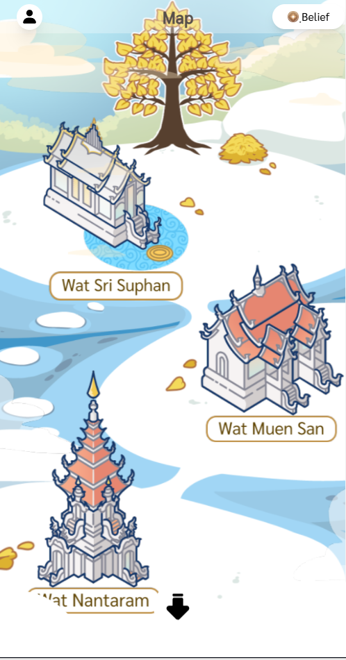
Travel App for Faith & Fortune Tourism.
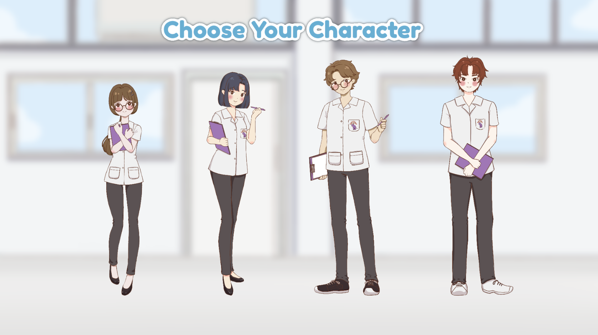
Dental Treatment Simulation Game.

Web-Based 3D Data Visualization Platform.
Real-time 3D Carbon Emission Dashboard for CMU.
This work was supported by the collaborating organizations, funding bodies, and staff members of the ICAT Research Group listed below:
Energy Research & Development Institute – Nakornping
รัฐบาลAsst. Prof. Watcharaphong A. / Co. Asst. Prof. Teerawat K.
รัฐบาลDr. Korawan Sangkakorn, Research Grants Coordinator
รัฐบาล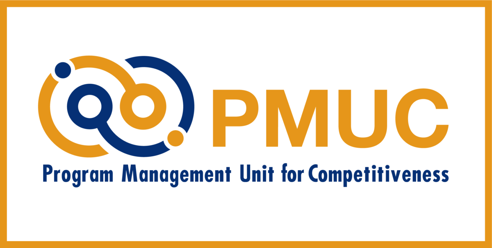
Program Management Unit for Competitiveness Enhancement
รัฐบาลMultidisciplinary Research Institute, Chiang Mai University
รัฐบาลNapaphat Lekgamheng, Researcher (ETE Center)
รัฐบาลMurata Electronics (Thailand) Ltd., Industry Partner
เอกชนTourism Authority of Thailand, Phuket Office
รัฐบาลQueen Sirikit Botanic Garden, Environmental Partner
รัฐบาลEnergy Research & Development Institute – Nakornping
รัฐบาลAsst. Prof. Watcharaphong A. / Co. Asst. Prof. Teerawat K.
รัฐบาลDr. Korawan Sangkakorn, Research Grants Coordinator
รัฐบาลProgram Management Unit for Competitiveness Enhancement
รัฐบาลMultidisciplinary Research Institute, Chiang Mai University
รัฐบาลNapaphat Lekgamheng, Researcher (ETE Center)
รัฐบาลMurata Electronics (Thailand) Ltd., Industry Partner
เอกชนTourism Authority of Thailand, Phuket Office
รัฐบาลQueen Sirikit Botanic Garden, Environmental Partner
รัฐบาล